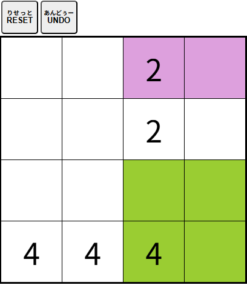

| 【四角に分ける】 |
|
すべてのマスを正方形、または長方形のどちらかに分けましょう。
 ・好きなマスをクリック（タッチ）し、ドラッグして正方形、または長方形を作ります。 ・ひとつの正方形、または長方形には必ずひとつの数字が入ります。 その数字が正方形や長方形のマスの数と同じでなければなりません。 ・[RESET]ボタンをクリック（タッチ）すると最初からやり直す事ができます。 ・[UNDO]ボタンをクリック（タッチ）するとひとつ前の状態に戻す事ができます。 |